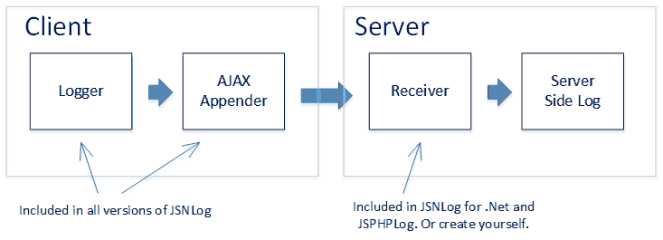
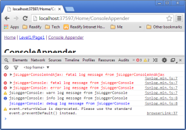

Know what your JavaScript application is up to after it has gone into production.
A JavaScript application is like your favorite child. You shower it with love, prepare it for life the best way you can, and then send it into production where it faces users that do things you never imagined and servers slower than you thought possible.
The issue is that now your application is live, there will be users. If the users are not happy, they will complain to your manager (or your client). This in turn has the potential to make you unhappy. You don't want unhappy users.
To keep your users happy, you want to know whether their experience is good and if not, fix it. In restaurants, the waiter comes to your table and asks if everything is ok. You could call your users, but unless you have only a few, it is easier to ask your application instead. After all, it can talk to you in a way a restaurant meal can't.
Specifically, you will want to know about:
Ok, so you need client side logging. However:
There are many logging packages for JavaScript, including JSLog, Log4js and log4javascript. In this article, you'll meet JSNLog, a relatively new JavaScript package that ticks all these boxes. It is open source, and at 1.5kb about the size of a small image. It is also very well integrated with ASP.NET MVC and Webforms, and has integration with PHP as well.
If you like this article, please vote for it.
First Download and install JSNLog.
Then to log something to the server, in your JavaScript write something like this:
JL().info("log message");
This calls function JL(), which returns a logger. It then calls function info on that logger to log an info message.
JSNLog provides lots of options, named loggers, etc. But if you simply want to log something, this is all it takes.
You can pass in strings, objects and functions. If you pass in a function, it will execute the function and then log whatever the function returns.
It not only sends the log data, but also the time, browser type, etc.
The JavaScript logger takes the message and hands it off to the AJAX appender, a piece of code inside JSNLog that sends the log message to the server running your MVC or Webforms site or your PHP site. The JSNLog server side component then stores the log message in your server side log, using whatever logging package you already use (for .Net supports Log4Net, NLog, Elmah and Common.Logging).
There are JSNLog editions for .Net and for PHP.
If you use Java, Python or some other technology for which there is no server side component, you can use the stand alone JSNLog.js library. The JSNLog documentation has the format of the log messages, making it easy to create a server side component yourself.
If terms such as "appender" and "info" have a familiar ring, that makes sense. JSNLog gets its inspiration from Log4J and its offshoots, but then adds its own sauce in the form of a shortened and simplified syntax and features to make it work better on the client.
The remainder of this article assumes you have an ASP.NET MVC or Webforms web site. It shows how to control your JavaScript loggers from your server side web.config file, where all JSNLog definitions sit inside the <jsnlog> element.
Note however that you can just as easily configure your loggers in your JavaScript (how). Also, JSNLog comes with sensible configuration defaults, so for simple logging you don't need to do configuration at all.
During development it can be useful to simply send log items to the console provided by the F12 developer tools in Chrome, Firefox and Internet Explorer. To enable this, JSNLog includes a Console Appender.
To log any exceptions so you know there is a bug in your code, you can use windows.onerror. This handler is invoked by the browser for each uncaught exception:
window.onerror = function myErrorHandler(errorMsg, url, lineNumber) {
// Send message with severity fatal
JL().fatal("Exception - " + errorMsg + ", url: " + url + ", line number: " + lineNumber);
return false;
}
If instead of all exceptions you are only interested in exceptions in some specific piece of code, you could use try catch:
try {
// Code that may throw exception
}
catch (e) {
// e contain a string or object with exception data
JL().fatalException("message", e);
// Handle the exception, ignore it, or throw it again using throw e
}
fatalException takes both a message and an exception. These will both be logged in the same log message. On Chrome, Firefox and IE10 and higher, a stack trace will be logged as well.
To get a log message if an AJAX request has failed, or has taken too long:
var msBeforeAjaxCall = new Date().getTime(); // Send AJAX request and receive response $.ajax( "url" ) .done(function() { alert( "success" ); }) .fail(function() { // Send a message with severity error if AJAX request failed JL().error("Request to ..... failed."); }) .always(function() { // Send error message if response took longer than 10 seconds to arrive var msAfterAjaxCall = new Date().getTime(); var timeTakenInMs = msAfterAjaxCall - msBeforeAjaxCall; if (timeTakenInMs > 10000) { JL().error("Request to ..... took " + timeTakenInMs + " ms."); } });
One problem with loggers is that they can generate a lot of useless data. JSNLog includes many options to get the data you actually want.
When you log something, you can give it severity:
JL().trace("message with severity trace");
JL().debug("message with severity debug");
JL().info("message with severity info");
JL().warn("message with severity warn");
JL().error("message with severity error");
JL().fatal("message with severity fatal");
You've already seen info(), error() and fatal() in the examples above.
To filter out all messages below a given severity:
<!--Only send error and fatal log messages--> <logger name="" level="ERROR" />
To stop all messages:
<!--Stop all messages--> <logger name="" level="OFF" />
If you do logging in multiple places, having just one logger quickly gets limiting. What if you want to have debug logging in some functions, but only error logging everywhere else?
The solution is to use named loggers:
<!--Set options on logger1. If it does not exist, it will be created.--> <logger name="logger1" level="DEBUG" /> <!--Set other options on logger2. This does not affect logger1.--> <logger name="logger2" level="ERROR" />
In your JavaScript code, using named loggers looks like this:
JL("logger1").error("message from logger1");
In applications with dozens of loggers, setting options for each one individually can get boring. Because of this, JSNLog uses the same inheritance mechanism as Log4J and Log4Net. Here is how this works:
Loggers inherit their options from their ancestors. So if you set options on logger "abc", then "abc.def", "abc.def.ghi" and all other descendents of "abc" get the same options, unless you specifically override them.
The root logger is the only logger without a name. As you saw in the beginning of this article, you access it by simply leaving out the name:
<!--Set options on root logger--> <logger name="" level="ERROR" /> <!--Or leave out the name attribute altogether--> <logger level="ERROR" />
Now that you've seen how to filter messages by severity and how to configure multiple JavaScript loggers through inheritance, let's have a look at the other options.
Sometimes it's just not worth the time to fix some rare exception. Or there is a third party component throwing exceptions and there is nothing you can do about it.
The disallow option suppresses all messages that match a given regular expression. If you're logging an object, it will be converted to JSON and then matched:
<!--Suppress messages that match regular expression [Ss]uppress\s+me--> <logger name="" disallow="[Ss]uppress\\s+me" />
Imagine trying to solve a bug that only happens with everybody's favorite browsers, IE 7 and 8. You want to switch on the JavaScript logger, but only for those browsers.
The userAgentRegex option is your friend here. It disables the logger, except if the client's user agent string matches a given regular expression:
<!--Disable logger, except for IE 7 and IE 8--> <logger name="" userAgentRegex="MSIE 7|MSIE 8" />
Imagine having a loop that executes 50 times, and somewhere in that loop a logger decides to send a message. You would get the same message 50 times, like this. Ouch!
Something is wrong - x = 1 Something is wrong - x = 2 Something is wrong - x = 3 ... Something is wrong - x = 49 Something is wrong - x = 50
The onceOnly option will get rid of the near duplicates for you. It takes one or more regular expressions. When it sees a message that matches one of those, it remembers that it has seen a message matching that particular regular expression. If it gets another message matching that regular expression, it will suppress it.
<!--Send only one message that matches regular expression "Something is wrong - x ="--> <logger name="" onceOnly="Something is wrong - x =" />
With the onceOnly option in place, you get only the first message:
Something is wrong - x = 1
You can set the maxMessages option to limit the total number of messages sent by the client. This is a blunt instrument, because it stops sending messages after the limit is reached, regardless of which JavaScript loggers are trying to send or the severity of the messages.
<!--Ensure that the client sends no more than 3 log messages--> <jsnlog maxmessages="3" > </jsnlog>
Note that this option is applied to the <jsnlog> element itself. That's because this option applies to the entire JSNLog library, not to an individual logger.
When an exception happens, it is not always clear why it happened. So you may need to generate debug messages in several places to find the cause:
window.onerror = function myErrorHandler(errorMsg, url, lineNumber) {
JL().fatal("Exception - " + errorMsg + ", url: " + url + ", line number: " + lineNumber);
return false;
}
function abc(x) {
JL().debug("abc: x=" + x);
...
}
function def(y) {
JL().debug("def: y=" + y);
...
}
The issue is that you want the debug information, but only if there is an exception. If there is no exception, the debug information is of no value.
To solve this, you can store the debug messages in browser memory, and only send them to the server if there is a fatal message. Because this may involve multiple named JavaScript loggers, this is configured on the AJAX appender - the JSNLog component that receives messages from the JavaScript loggers and sends them to the server.
The following code will make this all work. For details, see the JSNLog documentation.
<!--Create new appender-->
<ajaxAppender
name="appender1"
storeInBufferLevel="DEBUG"
level="ERROR"
sendWithBufferLevel="FATAL"
bufferSize="20"/>
<!--Tell the root logger to send all messages to the new appender-->
<logger appenders="appender1"/>
What's the result of this magic?
This way, you can generate as much debug data as you want without worrying about being swamped, because it will only be sent when you actually need it.
In a complicated application, you may get several log messages for a single request, some generated on the server, some generated on the client. You will want to tag each log message with a request id. That way, you can sort your log by request id and time stamp to get a unified picture of what happened for each request, first on the server and later on the client.
The JSNLog version for .Net generates a unique id for each request. When a JavaScript logger sends a log message, that message includes the request id, so it can be logged in your server side log.
It also provides a server side method RequestId, which gives you the same id. That way, you can include the same request id when a server side logger logs a message.
JSNLog uses the same request id that is used internally by IIS. This way, you can correlate with tracing done using Event Tracing for Windows (ETW). If you do not have ETW tracing switched on, JSNLog generates a random GUID.
JSNLog supports more advanced options that are beyond the scope of this article. These include batching of multiple log messages in one request to improve efficiencies, and filtering by client ip address to investigate problems reported by a particular user.
Once your JavaScript has gone live, it is prone to unexpected events, such as exceptions, failed AJAX requests and AJAX requests that take too long. To find out about these issues so you can fix them quickly, you need to log them to your server side log.
JSNLog is a relatively new client side logging package. Heavily optimized for life on the client, it sends log messages to the server running your MVC or Webforms or PHP site and includes many options to reduce the volume of log messages.
The next part, will show in detail all JavaScript functions provided by JSNLog.